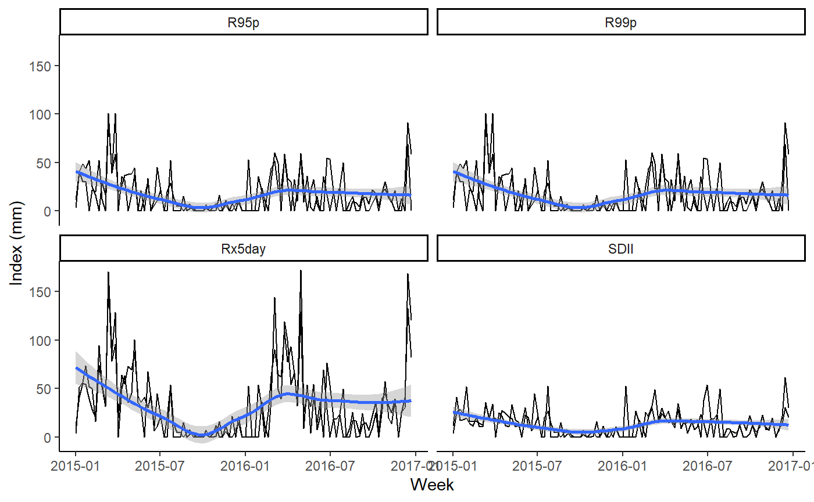
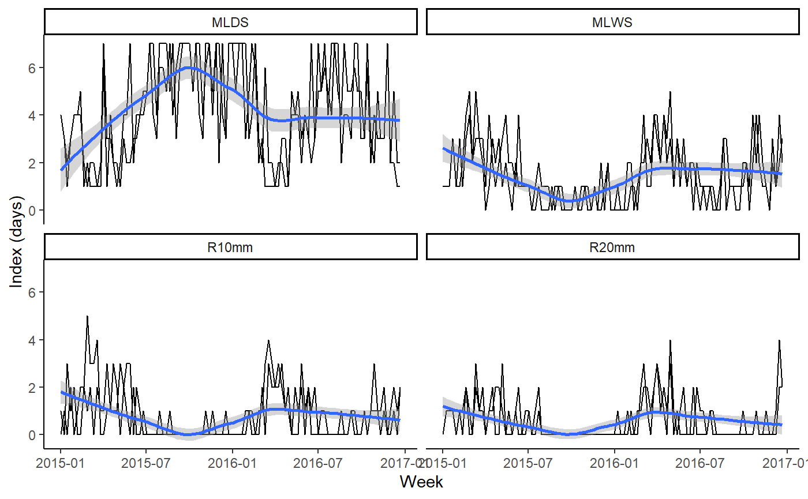

Overview.RmdThe chirps package provides functionalities for reproducible analysis using the CHIRPS data1 in R2. CHIRPS is daily precipitation a database developed by the Climate Hazards Group1 for high resolution precipitation gridded data. Is a 35+ year quasi-global rainfall data set. Spanning 50°S-50°N (and all longitudes) and ranging from 1981 to near-present, CHIRPS incorporates 0.05 arc-degree resolution satellite imagery, and in-situ station data to create gridded rainfall time series for trend analysis and seasonal drought monitoring1. Other functionality of chirps is the Evaporative Stress Index (ESI) which describes temporal anomalies in evapotranspiration produced weekly at 0.25 arc-degree resolution for the entire globe.
The Tapajos National Forest, Brazil is a protected area in the Brazilian Amazon. Let’s take two random points across its area and check the precipitation from Jan-2015 to Dec-2016.
library("chirps")
set.seed(12)
lonlat <- data.frame(lon = runif(2, -55, -54),
lat = runif(2, -3, -2))
dates <- c("2015-01-01","2016-12-31")
dat <- get_chirps(lonlat, dates)
#> Getting your request...
#> Getting your request...
head(dat)
#> # A tibble: 6 x 5
#> id lon lat date chirps
#> <chr> <dbl> <dbl> <date> <dbl>
#> 1 1 -54.9 -2.06 2015-01-01 0
#> 2 1 -54.9 -2.06 2015-01-02 0
#> 3 1 -54.9 -2.06 2015-01-03 0
#> 4 1 -54.9 -2.06 2015-01-04 0
#> 5 1 -54.9 -2.06 2015-01-05 11.3
#> 6 1 -54.9 -2.06 2015-01-06 0The function get_chirps returns a data.frame which inherits the class ‘chirps’, where each id represents the index for the rows in the inputted ‘object’.
With precip_indices is possible to track how the precipitation evolves across a time series using precipitation variability indices3. Let’s take the indices for periods of 7 days (1-week) and check how these indices changed across the time series.
pi <- precip_indices(dat, timeseries = TRUE, span = 7)
head(pi)
#> # A tibble: 6 x 6
#> id date lon lat index value
#> <int> <date> <dbl> <dbl> <chr> <dbl>
#> 1 1 2015-01-01 -54.9 -2.06 MLDS 4
#> 2 1 2015-01-01 -54.9 -2.06 MLWS 1
#> 3 1 2015-01-01 -54.9 -2.06 R10mm 1
#> 4 1 2015-01-01 -54.9 -2.06 R20mm 0
#> 5 1 2015-01-01 -54.9 -2.06 Rx1day 11.3
#> 6 1 2015-01-01 -54.9 -2.06 Rx5day 11.3The function precip_indices returns a data.frame with the precipitation indices. Each date corresponds to the first day in the time series intervals as defined by the argument ‘span’. When ‘timeseries = FALSE’ the function returns a single precipitation index for the entire time series.
There are two main types of indices. Those that are expressed in days (“MLDS”,“MLWS”,“R10mm”,“R20mm”) and those that are expressed in mm (“R95p”,“R99p”,“Rx5day”,“SDII”). Let’s split these indices and make a time series plot.
library("tidyverse")
#> -- Attaching packages -------------------------------------------------------------------------- tidyverse 1.3.0 --
#> v ggplot2 3.2.1 v purrr 0.3.3
#> v tibble 2.1.3 v dplyr 0.8.3
#> v tidyr 1.0.0 v stringr 1.4.0
#> v readr 1.3.1 v forcats 0.4.0
#> -- Conflicts ----------------------------------------------------------------------------- tidyverse_conflicts() --
#> x dplyr::filter() masks stats::filter()
#> x dplyr::lag() masks stats::lag()
mm <- c("R95p","R99p","Rx5day","SDII")
days <- c("MLDS","MLWS","R10mm","R20mm")
pi %>%
filter(index %in% mm) %>%
ggplot() +
geom_line(aes(x = date, y = value, group = id)) +
geom_smooth(aes(x = date, y = value), method = "loess") +
facet_wrap(. ~ index) +
theme_classic() +
labs(x = "Week", y = "Index (mm)") ->
gg1
plot(gg1)
Now plot the indices expressed in days.
pi %>%
filter(index %in% days) %>%
ggplot() +
geom_line(aes(x = date, y = value, group = id)) +
geom_smooth(aes(x = date, y = value), method = "loess") +
facet_wrap(. ~ index) +
theme_classic() +
labs(x = "Week", y = "Index (days)") ->
gg2
plot(gg2)
Here we see how these indices are changing across the time series. It is possible to see that the maximum precipitation in consecutive 5-days (Rx5day) is higher in the first weeks of the years. Which agree with the beginning of the rainy season in this region. In the other chart we note a increasing in the extent of consecutive dry days (MLDS) across the time series, with also a decrease in the number of consecutive rainy days (MLWS). If used carefully and with scientific rigor, these indices are a good proxy to evaluate the climate variability using precipitation data.3,4
The chirps package also retrieves the Evaporative Stress Index (ESI) using the function get_esi which behaves similarly to get_chirps.
set.seed(12)
lonlat <- data.frame(lon = runif(2, -55, -54),
lat = runif(2, -3, -2))
dates <- c("2016-05-01","2016-12-31")
dat <- get_esi(lonlat, dates)The function get_esi may return NA’s due to cloudiness in the dataset. One way to turn over this is increase the buffer area around inputted object with the argument ‘dist’ passed to sf.
Objects of class ‘sf’ can also be passed directly to both get_chirps and get_esi.
lonlat <- data.frame(lon = c(-55.0281,-54.9857, -55.0714),
lat = c(-2.8094, -2.8756, -3.5279))
lonlat <- st_as_sf(lonlat, coords = c("lon","lat"))
dates <- c("2017-12-15","2017-12-31")
get_chirps(lonlat, dates)To return an object with the same class (sf), the argument ‘as.sf = TRUE’ is used. This, however, cannot be passed to precip_indices.
1. Funk, C., Peterson, P., Landsfeld, M. & Pedreros, D. et al. The climate hazards infrared precipitation with stations—a new environmental record for monitoring extremes. Scientific Data 2, 150066 (2015).
2. R Core Team. R: A language and environment for statistical computing. version 3.3.3. (2017).
3. Aguilar, E., Peterson, T. C., Obando, P. R. & Frutos, R. et al. Changes in precipitation and temperature extremes in Central America and northern South America, 1961–2003. Journal of Geophysical Research 110, D23107 (2005).
4. de Sousa, K., Casanoves, F., Sellare, J. & Ospina, A. et al. How climate awareness influences farmers’ adaptation decisions in Central America? Journal of Rural Studies 64, 11–19 (2018).